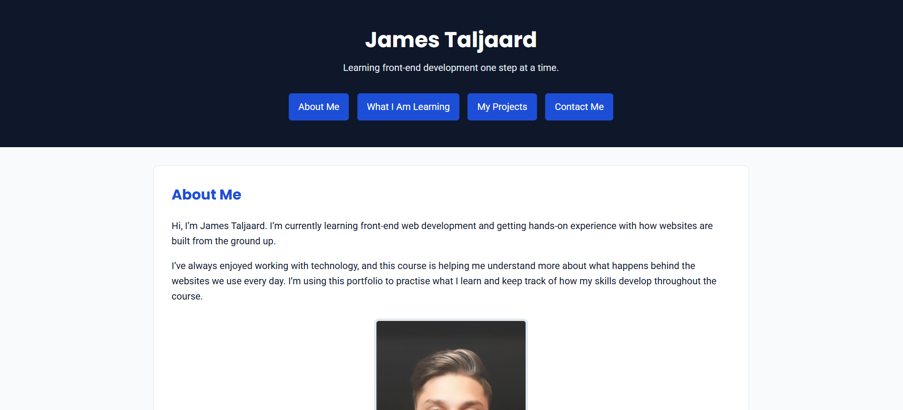

Six stages of my front-end development work, from the first HTML structure to a Vue Router application. Open each project to explore its source code and the decisions behind it.
Showing all 6 projects.

Module 2 — HTML Foundations: My First Webpage
Project 01 · Module 2
Semantic HTML Portfolio
The starting point for my personal portfolio: a structured page introducing my work and providing a clear foundation for later styling.
HTML
Semantic structure
What I built & learned
Implementation: Organised the portfolio content using HTML elements and navigation links, establishing the introduction and project structure.
Reflection: A useful layout begins with meaningful content and a logical document structure, before colour or interaction is added.
A contact-form demonstration with immediate input feedback and a modal preview of valid entries.
JavaScript
Validation
Dialog
What I built & learned
Implementation: Validated a name, email address and message, displayed relevant errors and showed the entered details without submitting them to a server.
Reflection: Clear feedback and predictable focus behaviour matter just as much as whether the validation logic works.
A single-page application version of my portfolio with routed views, project details and a custom fallback page.
Vue Router
Dynamic routes
Build tools
What I built & learned
Implementation: Added page navigation, a dynamic project route and 404 handling, then checked the project with ESLint, a production build and browser tools.
Reflection: Routing connects the interface to meaningful URLs and makes a growing application easier to organise.